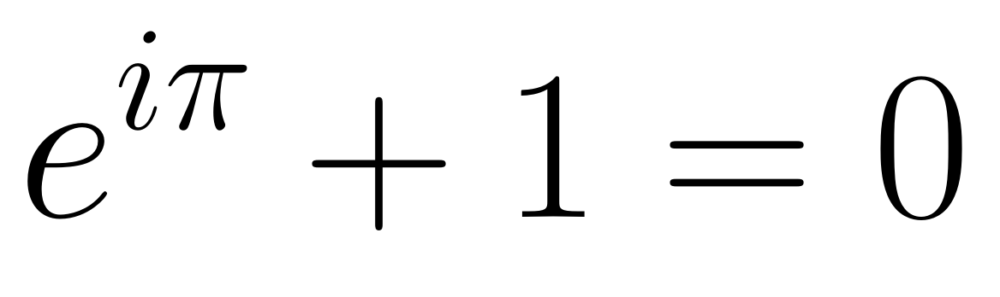
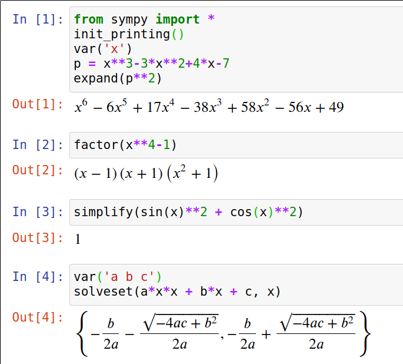
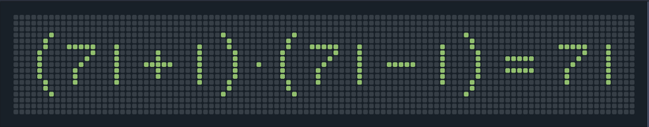
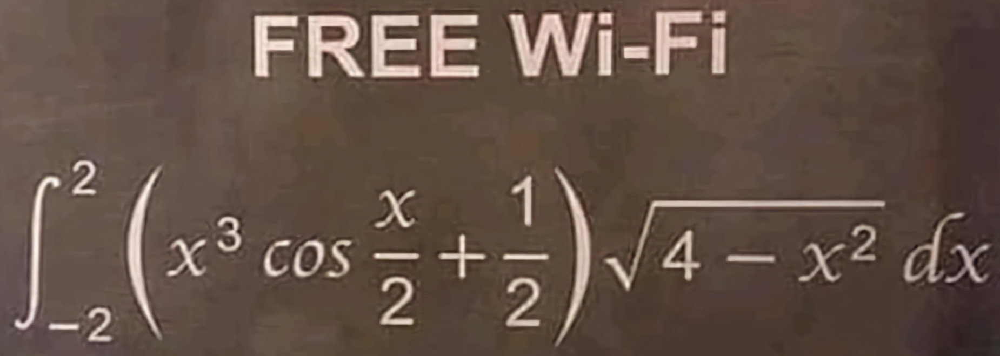

v.3.5, 27 августа 2021 года
«Умные пользуются компьютером, чтобы сберечь время, а дурные, чтобы его потратить.»
— Неизвестный автор
В известном произведении Льюиса Кэрролла «Алиса в Зазеркалье» (“Alice Through the Looking Glass”) главной героине вместе с Королевой однажды пришлось очень быстро бежать. Отдышавшись, Алиса в изумлении огляделась.
— Что это? — спросила она. — Мы так и остались под этим деревом! Неужели мы не стронулись с места ни на шаг?
— Ну, конечно, нет, — ответила Королева. — А ты чего хотела?
— У нас, — сказала Алиса, с трудом переводя дух, — когда долго бежишь со всех ног, непременно попадёшь в другое место.
— Какая медлительная страна! — сказала Королева. — Ну, а здесь, знаешь ли, приходится бежать со всех ног, чтобы только остаться на том же месте! Если же хочешь попасть в другое место, тогда нужно бежать по меньшей мере вдвое быстрее!
— Ах, нет, я никуда не хочу попасть! — сказала Алиса. — Мне и здесь хорошо. Очень хорошо!
Современную информатику (Computer Science) вполне можно сравнить с Зазеркальем Льюиса Кэрролла — так быстро она развивается. Устаревают технологии, меняются языки программирования, не вызывающие ни у кого сомнения утверждения перестают быть истинными…
Специалист в области современных информационных технологий обязан хорошо знать многие разделы современной математики и информатики, обладать практическими навыками работы над крупными проектами, хорошо понимать современные парадигмы программирования, отлично разбираться в теории операционных систем и в сетевых технологиях, владеть несколькими языками программирования. Он должен быть человеком, способным принимать решения, а не просто реализовывать решения, принятые другими.
Прежде всего следует научиться понимать особый язык — язык математики и информатики. На этом языке профессионалы общаются друг с другом, описывают достигнутые ими результаты, ставят новые задачи… При этом они, конечно, ещё и программы пишут.
В ближайшее время вы познакомитесь с языком математики и информатики,
многими интересными свойствами чисел. Вы узнаете, что такое правильная программа и будете способны понимать определение предела последовательности:

Эта формула иллюстрирует единство
В нашем курсе будут рассмотрены следующие темы:
Программное обеспечение в соответствии с его лицензионным соглашением может быть:
Несвободное и полусвободное ПО распространяется с различными видами проприетарных лицензий. В такой лицензии обычно говорится, что получатель лицензии может использовать одну или несколько копий программы, но при этом правообладателем всех копий остаётся издатель программного обеспечения. Для такой лицензии типично перечисление большого количества условий, запрещающих определённые варианты использования ПО, например, передачу ПО третьим лицам.
Примером проприетарной лицензии является лицензия на Microsoft Windows.
Свободное программное обеспечение (СПО, Free Software) — программное обеспечение, пользователи которого обычно имеют следующие права («свободы»), предоставляемые лицензией GPL:
В последнее время всё большую популярность приобретает термин FOSS — Free and Open Source Software, позволяющий избежать выяснения тонких различий между свободным и открытым обеспечением. Наряду с ним используется и термин FLOSS — Free/Libre and Open Source Software.
Более подробно познакомиться с особенностями ПО из категории FOSS можно с помощью статьи Википедии Free and open-source software.
Ещё одной важной характеристикой программного обеспечения является его стоимость для пользователя. С этой точки зрения ПО обычно делят на следующие категории:
Платные и условно бесплатные программы распространяются с проприетарными лицензиями в исполняемом виде без их исходного кода.
Установка условно бесплатного ПО может сопровождаться незаметной для пользователя установкой других программ, включая вредоносное или шпионское ПО. Сами условно бесплатные программы также могут представлять опасность, так как их исходный код недоступен и не может быть проконтролирован.
Свободно распространяемые программы являются бесплатными, но конкретный распространитель может взимать плату за получение у него копий программ и дополнительные сервисные услуги.
Платное программное обеспечение чаще всего распространяется под различными вариантами лицензии Commercial Software. Такое ПО разрабатывается с целью получения коммерческой прибыли путём продажи его отдельных экземпляров. Microsoft Windows и Microsoft Office являются типичными примерами платного ПО.
Критики подобного подхода к разработке и распространению программного обеспечения предлагают сравнивать процесс создания новой марки автомобиля и новой компьютерной программы. Изготовление ещё одного, дополнительного экземпляра нового автомобиля, безусловно, требует немало дополнительных ресурсов. Но почему, спрашивают критики, за создание каждой дополнительной копии новой программы правообладатель хочет получать весьма приличное вознаграждение?
Разработку ПО можно рассматривать как научное исследование, продолжают критики, а создание конкретной программы — как публикацию научной статьи. Но тогда исходный текст программы должен быть доступен всем желающим, чтобы его можно было проверить и при необходимости доработать.
К сожалению, Россия относится к числу стран, в которых многие пользователи не имеют реальных стимулов переходить к использованию свободного программного обеспечения, хотя в течение последних двадцати лет было принято немало Федеральных законов и Государственных программ, которые должны были обеспечить этот переход. В большинстве школ и университетов России учебный процесс основывается исключительно на проприетарном ПО, что разительно контрастирует с переменами, произошедшими в мире за последние 15-20 лет.
В последние 2-3 года мировые университеты начали привлекать к себе студентов тем, что обещают научить их использовать свободное и открытое ПО. Современная молодёжь ценит техническую свободу, ей нравится открытый исходный код. Вот что будущие студенты могут прочитать на сайте Мичиганского технологического университета:
Так как большая часть крупных компаний сейчас вносит заметный вклад в развитие проектов с открытым исходным кодом, то это явно главная мировая тенденция. Все основные суперкомпьютеры, 90% облачных серверов, 82% смартфонов и 62% встроенных систем использует ОС с открытым исходным кодом. Более 70% устройств «Интернета вещей» также используют программное обеспечение с открытым исходным кодом. Компания Red Hat зарабатывает миллиарды долларов в год на услугах, которые они предоставляют в дополнение к бесплатным продуктам.
Сайт AlternativeTo даёт возможность узнать о лучших программных продуктах, способных заменить ту или иную программу. В августе 2021 года на этом сайте упоминалось более 100000 разных программных продуктов. Поиск альтернативного ПО можно ограничивать, указывая его желаемую платформу (например, Linux или Androd) и тип лицензии (Commercial, Free или OpenSource).
Наш курс основывается на использовании исключительно свободного ПО и среди многих причин этого главными являются следующие:
Кроме того:
Операционная система Linux — любимая операционная система автора этого материала. Существует много различных дистрибутивов этой ОС. При правильной установке любого из них практически все необходимые для учебного процесса программные продукты окажутся установленными автоматически. Если же чего-то не окажется, то установить нужный пакет можно с помощью одной команды.
Современные дистрибутивы Linux позволяют пользователям «жить как в Windows», используя при работе в основном мышку. Для курсов, связанных с IT-технологиями, однако, важны прежде всего те особенности операционной системы Linux, которых обычно нет в Windows. Заметим, что профессионал может превратить компьютер с Windows в полноценное рабочее место программиста путём установки на него значительного количества свободных и проприетарных программ, но типичному первокурснику это сделать едва ли удастся.
Свободная операционная система Linux — очень подходящая операционная система как для студента, так и для аспиранта, научного работника или преподавателя.
Программу для одного из первых компьютеров ЭНИАК (Electronic Numerical Integrator and Computer) не писали на каком-либо языке, её создавали путём соединения в нужном порядке отдельных вычислительных блоков. Затем долго отлаживали и использовали для различных наборов входных данных.
Машинный код — это просто содержимое ячеек памяти компьютера, в которых хранится программа, которую «понимает» и может выполнить процессор. Оперативную память можно представлять себе как последовательность (массив, список) байт, содержимое которых чаще всего записывают в шестнадцатеричной системе счисления.
Существует традиция: знакомство с языком программирования начинать с демонстрации кода простейшей программы, печатающий приветствие «Здравствуй, мир!» (как правило, по-английски). Вот как выглядит в машинных кодах программа «Hello, world!» для процессора архитектуры x86 (для операционной системы MS DOS):
BB 11 01 B9 0D 00 B4 0E 8A 07 43 CD 10 E2 F9 CD 20 48 65 6C 6C 6F 2C 20 57 6F 72 6C 64 21Ассемблер, как и машинный код, зависит от архитектуры компьютера и используемой операционной системы. Программировать на ассемблере немного легче, чем в машинных кодах. Вот пример программы «Hello, world!» на одном из диалектов ассемблера для Linux/x86:
SECTION .data
msg: db "Hello, world",10
len: equ $-msg
SECTION .text
global _start
_start: mov edx, len
mov ecx, msg
mov ebx, 1 ; stdout
mov eax, 4 ; write(2)
int 0x80
mov ebx, 0
mov eax, 1 ; exit(2)
int 0x80Языки программирования высокого уровня отличаются друг от друга, в частности, подходом к организации вычислений. Парадигма программирования — способ концептуализации того, что значит «производить вычисления», и как задачи, подлежащие решению на компьютере, должны быть структурированы и организованы.
В нашем курсе мы познакомимся (в разной степени) со следующими парадигмами программирования.
В настоящее время Википедия «знает» о существовании почти 700 различных языков программирования. Язык C не был первым из языков высокого уровня, которые начали появляться в середине 50-х годов XX века (об этих языках можно прочитать в статье Википедии История языков программирования, но именно язык программирования C позже стали называть «матерью» большинства современных языков.
Программа «Hello, world!» на языке C:
#include <stdio.h>
int main(void){
printf("Hello, world!\n");
return 0;
}Языки программирования можно сравнивать между собой по различным критериям. Один из способов классификации предлагается в статье Википедии List of programming languages by type. В процессе подготовки материала лекции автором был написан небольшой (чуть более 50 содержательных строк) скрипт на языке Python, который подсчитывает количество ссылок в списках категорий этой статьи на различные языки программирования. Вот какой результат можно получить с его помощью:
[roganov@aorus]$ python lang_links_count.py 2>/dev/null | head
Julia: 17
Python: 16
Lua: 13
Perl: 13
Wolfram Language: 13
ActionScript: 12
JavaScript: 12
PHP: 12
Ruby: 12
C#: 11Не следует придавать слишком большое значение полученному в результате работы скрипта результату, однако что-то он всё же отражает…
Python — высокоуровневый язык программирования, являющийся свободным программным продуктом, появился достаточно давно — в 1991 году. Он поддерживает несколько парадигм программирования, включая объектно-ориентированное и функциональное программирование. Язык активно развивается и последняя (на момент написания данного текста) его стабильная версия 3.9.6 очень сильно отличается от более ранних. Это важно знать и учитывать при чтении книг или материалов в Сети — многие факты и примеры программного кода могут оказаться устаревшими.
Некоторое время назад Python «раздвоился» — «старый» Python 2 и «новый» Python 3 оказались в значительной мере разными языками. В течение нескольких лет существовало «двоевластие» и только совсем недавно большинство использующих Python людей (но не все!) «согласились с победой Python 3».
В нашем курсе мы будем использовать именно Python 3.
Мы уже видели, как программа «Hello World!» выглядит на некоторых языках программирования. Вот дальнейшие примеры:
Java
class HelloWorld {
static public void main( String args[] ) {
System.out.println( "Hello World!" );
}
}C++
#include <iostream>
int main()
{
std::cout << "Hello World!" << std::endl;
return 0;
}Ruby
puts "Hello World!"Python
print("Hello World")Это сравнение показывает, что из рассмотренных нами языков по простоте конкуренцию языку Python может составить только Ruby. Эти два языка весьма близки друг к другу по своим возможностям, но для решения задач обработки данных язык Python подходит лучше. Более того, язык Python сейчас стал de facto , как это сказано в первой же фразе описания курса Python Computing for Data Science, прочитанного весной 2018 года в Калифорнийском университете в Беркли, superglue language for modern scientific computing.
Язык Python стал столь популярным в области научных исследований благодаря наличию многочисленных библиотек (модулей — modules). Их использование позволяет сочетать достоинства объектно-ориентированного языка Python и эффективность выполнения базовых методов этих библиотек, реализованных на компилируемых языках C, C++ и Cython.
Как и сам язык все его научные библиотеки являются свободными программными продуктами. NumPy предоставляет такие базовые структуры, как (многомерные) массивы, и методы для работы с ними. SciPy является расширением NumPy и добавляет целый ряд функций для численного решения задач из самых разных разделов математики. Matplotlib — библиотека для визуализации данных, предоставляющая удобный интерфейс в случае использования NumPy и SciPy. Pandas предназначена для обработки и анализа данных, а Scikit-learn — библиотека машинного обучения для языка Python.
Jupyter Notebook — удобная среда для работы в браузере с различными языками программирования, включая Python. Он поддерживает два основных типа ячеек — это Code и Markdown. В ячейках первого типа пишется программный код, а в ячейках второго — произвольный текст на языке разметки Markdown, который может содержать математические формулы в TeX-нотации. «Родным» форматом файлов для Jupyter Notebook является ipynb.
SymPy — ещё одна из библиотек языка Python, превращающая этот язык в систему компьютерной алгебры. Википедия определяет систему компьютерной алгебры как прикладную программу для символьных вычислений, то есть выполнения преобразований и работы с математическими выражениями в аналитической (символьной) форме.
Одной из наиболее известных систем компьютерной алгебры является Mathematica, но это — проприетарный продукт. Почти ни в чём ей не уступает свободная программа Maxima. Работа над этими программами ведётся уже более 35 лет — с их помощью можно решать алгебраические и тригонометрические уравнения, находить производные и первообразные функций, вычислять определённые интегралы, решать дифференциальные и интегральные уравнения и системы уравнений, строить графики самых различных видов…
Библиотека SymPy, работать с которой особенно удобно в среде Jupyter Notebook, предоставляет аналогичные возможности. Вот которые примеры:

Не следует думать, что язык Python не имеет недостатков. Его справедливо критикуют:
Тем не менее Python сейчас, по-видимому, является наилучшим первым языком программирования.
Все описанные далее веб-порталы основаны исключительно на свободном программном обеспечении; некоторые из них разработаны программистами-преподавателями МИФИ с использованием среды Ruby on Rails и скриптов на языке Python.
Обратите внимание, что исходным языком сообщений на корпоративном портале является Markdown.
Форум портала «Подспорье» предназначен прежде всего для обсуждения различных вопросов по тематике изучаемой дисциплины.
Исходным языком сообщений на форуме также является язык разметки Markdown.
Портал JupyterHub позволяет использовать среду Jupyter Notebook и предоставляет доступ к командной строке Linux. Для работы с этим порталом (как и с остальными) можно использовать даже мобильный телефон, хотя на компьютере работать, конечно же, удобнее.
Портал JitsiMeet обеспечивает возможность видеоконференцсвязи и используется для чтения лекций и проведения занятий в дистанционном формате.
Материалы (в частности, презентации) прежде всего для использования во время лекций и занятий в компьютерных классах.
Тесты
Хорошие тесты могут даже чему-то научить!
Текущий рейтинг прежде всего определяется
Рейтинг повышается в случае успешного решения и сдачи задач, содержащихся в учебных материалах.
Итоговая семестровая оценка зависит от работы в течение семестра и полностью определяется итоговым рейтингом.
Периодически (обычно раз в две недели) проводится текущая аттестация и обучающиеся получают оценки по десятибалльной шкале (от
Индивидуальные домашние задания необходимо сдавать в срок. Вклад сданных в срок заданий в рейтинг является нулевым. Несданное домашнее задание порождает штраф, величина которого увеличивается с течением времени. Последующая сдача задания (в разумный срок) устраняет штраф. Если же домашнее задание сдаётся с большой задержкой при отсутствии объясняющей это уважительной причины, то к рейтингу добавляется небольшой, но неустранимый штраф.
Ошибка. Отсутствие достаточной критичности к себе.
Основанная на недостаточности знаний вера в правильное понимание самых различных вопросов и проблем. Джорда́но Бру́но говорил: «Тот вдвойне слеп, кто не видит своей слепоты; в этом и состоит отличие прозорливо-прилежных людей от невежественных ленивцев».
Ошибка. Неправильное понимание условия решаемых задач.
Часто студенты вдруг начинают решать не исходную задачу, а ту проблему, в которую по тем или иным причинам исходная задача превращается у них в голове.
Яркий пример: задача о квадратах.
Ошибка. Неумение чётко формулировать свои мысли.
Именно такие ошибки будут мешать вам писать правильные программы в первые месяцы обучения.
Совет. Вам будет тяжело. Учиться всегда тяжело. Поэтому прежде всего надо научиться учиться. Этому можно научиться и преподаватели помогут вам с этим. Но постарайтесь не тратить время на глупости! Вам будет его так не хватать…
Важнейший совет.
«Я слышу и я забываю; я вижу и я запоминаю; я делаю и я понимаю.»
— Конфуций
Помните: для достижения успеха необходимо постоянно решать задачи, и писать программы!
Самые активные из вас могут посмотреть на задания к этому материалу и попытаться решить одну, две или даже более задач. Затем надо послать решения ведущему лабораторные занятия преподавателю (кто преподаватель и как правильно послать сейчас не обсуждаем) и ждать вердикта. В случае успеха вас ждёт добавка к рейтингу!
Как много статей на русском языке (с точностью до одной) содержит сейчас Википедия?
С помощью Сети выясните, сколько знаков содержится в десятичной записи наибольшего известного на данный момент простого числа.
Каково назначение сайта github.com?
На электронном табло отображается верное математическое равенство, но один пиксел табло неисправен. Какой?

В чём именно заключается ошибка в следующем «доказательстве» того, что
Wi-Fi пароль — это первые десять цифр ответа:

Докажите или опровергните истинность следующего утверждения: «уравнение
Докажите или опровергните истинность следующего утверждения:
Докажите или опровергните истинность следующего утверждения:
В четырёхугольнике
Пластина имеет форму круга, в котором вырезано круглое отверстие меньшего радиуса так, что окружности, являющиеся границами кругов, касаются друг друга. Длина хорды большей окружности, которая параллельна их общему диаметру и касается меньшей окружности, равна 6 см. Найдите площадь пластины.
Запишите с использованием логической символики следующий
предикат: «достаточным условием положительности хотя бы одного корня
уравнения
Предикат
Напишите на любом языке программирования код, обрабатывающий списки категорий языков программирования статьи Википедии List of programming languages by type, который подсчитывает количество ссылок на каждый из упомянутых в статье языков и печатает упорядоченный по убыванию количества ссылок перечень языков программирования с указанием количества ссылок на язык. Языками программирования следует считать языки, перечисленные в статье Википедии List of programming languages. В разделе «Немного о языках программирования» лекции приведён пример того, как может выглядеть результат работы требуемого программного кода.